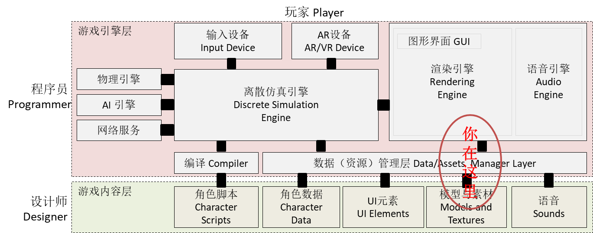

七、模型与动画
Contents
It was beautiful, historical, artistically subtle in a way that science can’t capture, and I found it fascinating
— Steve Jobs, Stanford Report, June 14, 2005
预计时间：6-8 * 45 min
人设之美令人难忘，它对游戏的成功至关重要。
动画系统使得游戏运动管理与游戏对象状态管理更方便！
课程相关资源

- 遗留模型 Garen
- 遗留模型 birds
- 资源商店，Adventure - Sample Game
- 标准资源包 ThirdPersonCharacter
- 免费人物模型与动画
1、模型与动画
2.1 基本概念
- 模型（Model）
- 物体对象的组合，Unity 映射为游戏对象树
- 每个物体包含一个网格（Mesh）与蒙皮设置
- 包含使用的纹理、材质以及一个或多个动画剪辑
- 模型由 3D 设计人员使用 3D Max 等创建
- 动画剪辑（Animation Clip）
- 物体或骨骼的位置等属性在关键帧的时间序列
- 通过插值算法计算每帧的物体的位置或属性
模型的显示
- Mesh 表面网格
- MeshRender 网格渲染器
三维模型是用三维建模软件建造的立体模型，也是构成 Unity 3D 场景的基础元素。 Unity 3D 几乎支持所有主流格式的三维模型，如 FBX 文件和 OBJ 文件等。 开发者可以将三维建模软件导出的模型文件添加到项目资源文件夹中，Unity 3D 会将其显示在 Assets 面板中。
主流的三维建模软件
- Autodesk 3D Studio Max
- Autodesk Maya
- Cinema 4D
动画剪辑可能包括：
- 在动作捕捉工作室中捕捉的人形动画
- 美术师在外部 3D 应用程序（如 Autodesk® 3ds Max® 或 Autodesk® Maya®）中从头开始创建的动画
- 来自第三方库（例如 Unity 的 Asset Store）的动画集
- 从导入的单个时间轴剪切的多个剪辑。
操作 07-01，体验模型与动画
- 创建一个项目
- 导入标准库
- 下载 birds.zip 解压，将 birds 目录拖入项目
- 查看 Standard Assets -> Vichicles -> Car 属性
- 点击模型与每个部件
- 查看 birds 的 crow，我们看到一个动画播放符号
- 模型资源
- 模型库包括许多内容，模型对象、材料、代码等
- 物体模型包括：
- 子物体
- 网格
- 动画
1.2 预制与模型使用
模型一般做成预制供用户使用，例如：
操作 07-02，模型使用
- 放置 car 预制到游戏场景地面 或 Plane 面上
- 运行
- 按“下箭头”倒车
- 研究 Car 的物体组织
- Car 预制结构
- 哪些物体有刚体
- 碰撞器设计
- 哪些是显示部件
- 启动的烟雾
- Lights？
- 控制代码
设计，为 crow（乌鸦）建预制
- crow对象结构
- 碰撞器？
- 飞行？
1.3 处理遗留模型
Mecanim 动画系统（5.0 起）是 Unity 公司推出的全新动画系统，具有重定向、可融合等诸多新特性，可以帮助程序设计人员通过和美工人员的配合快速设计出角色动画。但是，如果必须使用遗留动画资源，需要手动选择模型骨骼（Rig）的动画类型为 Generic
操作 07-03，处理遗留动画
- 下载 Garen 模型
- 模型骨骼（Rig）的动画类型选择
- None (没有动画)。如 skycar
- Legacy（遗留动画）。一般不用，如必须使用请自学
- Generic（普通动画）。如果资源是 遗留动画，请将它们改为 普通动画。带器械的人物设计只能使用普通动画！
- Humanoid（人形动画）。可以通过将物体各部件映射的人的身体部件，从而支持类似人的物体（如外星人、机器人、猩猩等）使用同一套动画模型。
2、Mecanim动画系统
Unity 有一个丰富而复杂的动画系统（有时称为“Mecanim”）。该系统具有以下功能：
- 为 Unity 的所有元素（包括对象、角色和属性）提供简单工作流程和动画设置。
- 支持导入的动画剪辑以及 Unity 内创建的动画
- 人形动画重定向 - 能够将动画从一个角色模型应用到另一角色模型。
- 对齐动画剪辑的简化工作流程。
- 方便预览动画剪辑以及它们之间的过渡和交互。因此，动画师与工程师之间的工作更加独立，使动画师能够在挂入游戏代码之前为动画构建原型并进行预览。
- 提供可视化编程工具来管理动画之间的复杂交互。
- 以不同逻辑对不同身体部位进行动画化。
- 分层和遮罩功能
2.1 Animator 组件
Animator 组件用于将动画分配给场景中的游戏对象。Animator 组件需要引用 Animator Controller，后者定义要使用哪些动画剪辑，并控制何时以及如何在动画剪辑之间进行混合和过渡。
如果游戏对象是具有Avatar定义的人形角色，还应在此组件中分配Avatar，如下所示：

- 有动画的模型，编辑器会自动添加该组件
- 用户也可以在模型根对象手动添加该组件
注意事项：如果系统添加的是 Animation 组件
模型骨骼是“遗留动画”，请修改为“普通动画”
2.2 使用动画控制器
Mecanim使用状态机管理运动
- 状态机模型：
- 𝐹𝑆𝑀=(Σ,𝑆, 𝑠0,𝛿,𝐹) 𝑤ℎ𝑒𝑟𝑒 𝛿：𝑆×Σ→𝑆
- 状态集（ 𝑆 ）：
- 运动状态、复合运动状态、特殊状态
- 特殊状态：
- Entry（ 𝑠0 ）：开始状态
- AnyState: 任意状态
- Exit（ 𝐹 ）：终止状态
- 变迁（𝛿）：
- 在输入(Σ)/事件驱动下，转入下一个状态
- 状态机特点
- 任意时刻 有仅有 一个活跃的状态或变迁
操作 07-04，创建动画状态机(CrowAnimatorController)
- 菜单 Assets -> Create -> Animator Controller
- 将 crow 动画 fly 动作拖入编辑器
- 在状态上用右键添加变迁，结果如上图所示
- 将 crow 拖入游戏，添加 Animator 组件
- 将制作的 CrowAnimatorController 拖入 Animator 组件
- 运行
2.3 设计状态机控制器
设计状态机控制器包括 状态、变迁、参数、条件 四个部分设计
操作 07-05，设计状态机控制器
- 创建如图状态图
- 控制器如何执行动画呢？
观察状态的属性：
- Motion 动画剪辑
- Speed 速度（倍率）
- Foot IK？
- …
- Transtions
- 默认：按顺序检测生效转移
- Solo：优先检测转移
- Mute：禁止转移
设置变迁：
- 注意变迁的顺序
- 设定 solo 或 mute
- 设定每个变迁
- 给变迁命名，便于控制
- 是否使用动画结束条件
- 变迁 动画混合（平滑过程）
- 变迁条件，例如：
- Fly->exit 条件是 live
- Not live 从任意状态转死亡
控制变迁条件：
- 使用转移控制变量
- Float，Int，Bool 类型
- Trigger 类型
- 规划转移变量与变迁事件发生条件
- 转移变量设计
- 建议多使用 trigger 类型变量
- 确保转移条件唯一，避免使用顺序决定转移（位操作通常OK）
- 使用 mute 关闭不用的转移
- 转移变量设计
- 条件设计，例如：
- live = false 转入死亡
- fly_attack_trigger 确定转入攻击
本案例参数，示例：
本案例变迁设置，实例

2.4 动画控制器基础编程
Animator API 脚本的属性与方法:
- 设计时，功能强大
- 运行时，你甚至无法查询设计了哪些状态
- 尽管有很多属性和方法
- 很多内容并不建议使用
- 通过参数控制状态机才是正解方案！！！
编程 07-06，控制小鸟飞行游戏
- 自己考虑给 crow 添加刚体等
- 设置合适阻尼（空气阻力）有利于平衡控制
- 注意：物理与运动学不能混用
2.5 动画控制器事件
- StateMachineBehaviour 对象
- 对象继承 ScriptableObject
- 绑定特定状态，执行特定行为
- 工作原理类似 SSAction
- StateMachineBehaviour 对象事件处理器
- 常用案例，例如：发大招
- Enter 状态，放一个烟雾效果
- Exit 状态，结束效果
- 常用案例（攻击事物）！！！
- 动作 Update 到指定时间（位置）
- 开始执行爆破、计分等任务
要点：事件处理
API 文档案例仅是参考。实战中，事件处理不宜处理该游戏对象外部的信息，如计算分数，销毁其他对象等。
常规做法由控制器注入事件侦听器，让计分对象处理。
MonoBehavior 事件：
- OnAnimatorIK
- OnAnimatorMove
见官方教程 为“原地就位”的人形动画编写根运动脚本
3、动画剪辑（Animation Clip）
动画剪辑是 Unity 动画系统的核心元素之一。Unity 支持从外部源导入动画，并允许在编辑器中使用 Animation 窗口从头开始创建动画剪辑。
3.1 外部源动画
外部来源的动画按照与常规 3D 文件相同的方式导入 Unity。这些文件（无论是通用 FBX 文件还是来自 Autodesk® Maya®、Cinema 4D、Autodesk® 3ds Max® 等 3D 软件的原生格式）可包含动画数据，这些数据的形式为文件中对象移动的线性录制结果。
从外部源导入的动画剪辑可能包括：
- 在动作捕捉工作室中捕捉的人形动画
- 美术师在外部 3D 应用程序（如 Autodesk® 3ds Max® 或 Autodesk® Maya®）中从头开始创建的动画
- 来自第三方库（例如 Unity 的 Asset Store）的动画集
- 从导入的单个时间轴剪切的多个剪辑。
操作 07-07，导入动画
- 导入动画，只需拖放模型文件到项目的Assets文件夹。
- 例如：拖 Garen 目录成为你的项目资源
- 用 Inspector 观察所有模型和动画
- 如果是传统动画，则必须改为 Generic
- Model 是导入参数，一般不需修改
- Garen是多模型导入，动画命名“模型名@动画名.fbx”
您可以在 Animation 窗口中查看导入的动画剪辑的关键帧和曲线。有时，如果这些导入的剪辑存在带有大量关键帧的很多骨骼，信息量可能非常复杂。例如，下图是 Animation 窗口中的人形奔跑动画的情况：

左边窗口是骨骼结构，右边点点是动画 关键帧 数据，选择 Curves，则看到插值后的运动曲线。
分割动画
- 部分动画需要分割
- 请选择模型，在属性面板 Ainimation 中分割动画
3.2 编辑动画
Unity 中使用 Animation 窗口 让您可以直接在 Unity 内创建和修改 动画剪辑。它旨在充当外部 3D 动画程序的强大而直接的替代方案。除了对运动进行动画化，编辑器还允许您对材质和组件的变量进行动画化，并使用动画事件函数（在时间轴上的指定点调用这些函数）来充实动画剪辑。
官方参考资源：Animation 窗口指南
操作 07-08，创建简单动画
- 打开 Animation 窗口
- 创建一个 cube 游戏对象，输入 postion(0,0,0)，并选择它
- 在 Animation 窗口，选 Create 按钮创建动画，命名为
JumpUp - 添加一个属性 transtion.postion
- 点击红色录制按钮，进入录制状态
- 拖动编辑线到中间，输入 postion(0,3,0)
- 编辑器会自动添加一个关键帧
- 结束录制
- 来回拖动编辑线，可观察到不同时间 Cube 的位置
- 点击运行！Cube 在跳动
- 同时，我们观察到 cube 添加了 Animator 组件，系统也创建了一个动画控制器
- 请将动画改为矩形运动。
- 使用 curves 工具，按上图改为圆周运动。
实验要求掌握的基本概念：
- 创建动画
- 关键帧
- 动画曲线，曲线 关键点
3.3 动画原理与资源属性
Animation Clip 资源属性
- 选择 JumpUp 动画资源
- Loop Time
- 沿时间轴循环
- Loop pose
- 动作复位
- Generate Root …
- 产生用于 Root 的曲线
- Loop Time
动画原理
- 控制游戏对象或子对象的属性
- 关键帧，关键点的值
- 插值计算每帧动画曲线值
3.4 导出动画编辑
模型动画是只读的，使用 “Ctrl-D” 就可以导出动画，导出的动画就是可编辑的
操作 07-09，导出模型动画并编辑
- 选择 Garen@Attack3的动画
- 按 “Ctrl-D” 并将导出的动画资源放入animation目录
- 创建一个 Garen 游戏对象
- 将刚才产生状态机拖入 Garen，运行！
- 在将 Attack3 加入状态机，并作为下一个动作
- 运行！
- 你将看到 Garen 跳起然后转一圈！
你现在可以用编辑器编辑这些 Clip 了
操作 07-10，动画设计练习
设计一个按钮，动画效果要求
- 开：按钮按到底部，回弹到约一半高度
- 关：按钮按到底部，回弹到全部高度
3.5 动画剪辑事件
动画剪辑事件是当动画执行到特定位置，执行你定义的代码！
操作 07-11，动画事件练习
添加事件处理代码，并挂载到 garen。例如：
添加动画事件
这时就可以做预制了！
要点：处理事件与消息发布
当你设计一个资源，它的代码不能直接调用资源外的代码，因为你根本不知道用户如何处理这个事件。怎么办？
- 函数回调，C#中称为 事件-代理 机制
- 接口回调，让外部代码实现你的事件接口，在注入侦听器
- 自己实现发布订阅模型
4、类人动画与动画中级知识
4.1 配置 Avatar
Avatar的意思化身（印度教和佛教中化作人形或兽形的神）。不用说兽幻化成人形，即使是植物，草也会有点头这样的拟人动作。因此Unity 的动画系统具有处理人形角色的特殊功能。因为人形角色在游戏中很常见，所以 Unity 为人形动画提供专门的工作流程以及扩展工具集。
- 类人骨架是非常常用的特例，并且在游戏中广泛使用
- 人骨骼结构的类似性，使得把动画从一个类人骨架映射到另一个成为可能。
- 只要模型的子对象名字一样
- 如果名字不一样，就需要映射
- 这个映射，就是 Avatar！
要点：模型 Avatar
模型部件到 理想人 部件之间的映射，使得理想人的动画剪辑可以运用到模型上，大大简化了动画设计的数量。
由于模型设计时，骨骼模型的部件可能和理想人不同，需要采用 Avater 映射到标准人。
操作 07-12，配置 Avater
- 资源商店找到 Adventure - Sample Game 加入我的资源
- 在 unity 中下载，并导入 Models, Materials, Shaders，Textures 四个目录
- 打开 Models 目录，逐一检查 Rig 的属性，观察 humanoid 类型与 Generic 不同
- 将 Player 和 FruitVender 加入场景，如图所示：
- 在 Standard Assets / Characters / ThirdPersonCharacter / Animation / 中找到 HumanoidIdleJumpUp 的动画 JumpUpidIdleJumpUp
- 创建动画控制器（仅动作 JumpUpidIdleJumpUp ）
- 将动画添加到 Player 和 FruitVender
- 运行！
你发现了哪些问题？
- 将模型 FruitVender 拷贝到另一个目录
- 在 Inspect 窗口，修改模型 Rig 类型为 humanoid 并 apply
- 点击 configuration
- 同时出现模型结构树和人物
T-pose，方便匹配工作 - 正常情况下，系统会自动匹配人的骨骼
- 最后选 done 结束配对
- 检查：Configuaration 有一个勾表示匹配成功！
- 将新 FruitVender 加入游戏场景
- 添加动画控制器
- 注意： Animator 的 Apply Root Motion 选中
- 运行！
这里我们并没有选用游戏自带动画，而是采用标准资源包的标准人动画。通过映射，实现了动作！
要点：体验根运动的效果
Animator 的 Apply Root Motion 属性，效果很重要！
4.2 动画直接播放
Animator 的两个直播方法：
- Play( … ) 直接转到一个状态
- CrossFade( … ) 带过度转到一个状态
注意事项：强制状态转移
尽管很好用，但小心使用哦！
4.3 动画覆盖控制器
Animator Override Controller 是一种数据资源，可让您扩展现有 Animator Controller，从而替换使用的特定动画但保留其原始结构、参数和逻辑。
- 问题场景
- 游戏有N个角色，这N个角色的状态机一样，仅动画内容不一样。
- 解决方案
- 为一个角色设计状态机，其他的角色就设计AnimatorOverrideController 的资源，在用工厂生产这个角色时，使用这个资源赋予 该角色 Animator.runtimeAnimatorController 属性
典型的代码：
脚本 Animator Override Controller 给出动态切换动作的案例。
4.4 混合树
游戏动画中的一项常见任务是在两个或更多相似运动之间进行混合。也许最熟知的示例就是根据角色的速度来混合行走和奔跑动画。另一个示例是角色在奔跑期间转向时向左或向右倾斜。
1D混合
游戏应用场景：一只鸭子走在沼泽地上，遇到水塘就游，遇到陆地就走。输入参数是地面与水面的距离 h，当 h > 0 走，当 h < 2 游，在之间则处于游走状态。
操作 07-13，1D 混合
动画混合：
- 创建一个鸭子对象 duck
- 在状态机编辑窗口，点右键出现 Create State -> Form new Blend Tree
- 修改状态名 swim_walk。 双击 swim_walk 状态，进入 Blend Tree 编辑界面。
- 添加两个动作，拖入 swim 和 walk 。 系统会生成一个混合控制变量，移动红线，并看播放效果
2D 混合
参考官方解说 2D 混合
具体案例，标准资源库的第三人称角色的 animator 目录，查看 Crouching 动作
4.5 更多复杂内容
动画是游戏中最复杂的编程，以下工作都是必要的！
- 子状态机
- 动画分层
- 目标匹配 : 通常在游戏中可能出现以下情况：角色必须以某种方式移动，使得手或脚在某个时间落在某个地方。
- 动态生成 AnimationClip
- 动态添加 AnimationCurve
- 动态添加 AnimationEvent
5、面向对象的编程 - 设计模式：对象的行为
行为型模式用于描述程序在运行时复杂的流程控制，即描述多个类或对象之间怎样相互协作共同完成单个对象都无法单独完成的任务，它涉及算法与对象间职责的分配。
行为型模式分为类行为模式和对象行为模式，前者采用继承机制来在类间分派行为，后者采用组合或聚合在对象间分配行为。由于组合关系或聚合关系比继承关系耦合度低，满足“合成复用原则”，所以对象行为模式比类行为模式具有更大的灵活性。
行为型模式是 GoF 设计模式中最为庞大的一类，它包含以下 11 种模式。
- 模板方法（Template Method）模式：定义一个操作中的算法骨架，将算法的一些步骤延迟到子类中，使得子类在可以不改变该算法结构的情况下重定义该算法的某些特定步骤。
- 策略（Strategy）模式：定义了一系列算法，并将每个算法封装起来，使它们可以相互替换，且算法的改变不会影响使用算法的客户。
- 命令（Command）模式：将一个请求封装为一个对象，使发出请求的责任和执行请求的责任分割开。
- 职责链（Chain of Responsibility）模式：把请求从链中的一个对象传到下一个对象，直到请求被响应为止。通过这种方式去除对象之间的耦合。
- 状态（State）模式：允许一个对象在其内部状态发生改变时改变其行为能力。
- 观察者（Observer）模式：多个对象间存在一对多关系，当一个对象发生改变时，把这种改变通知给其他多个对象，从而影响其他对象的行为。
- 中介者（Mediator）模式：定义一个中介对象来简化原有对象之间的交互关系，降低系统中对象间的耦合度，使原有对象之间不必相互了解。
- 迭代器（Iterator）模式：提供一种方法来顺序访问聚合对象中的一系列数据，而不暴露聚合对象的内部表示。
- 访问者（Visitor）模式：在不改变集合元素的前提下，为一个集合中的每个元素提供多种访问方式，即每个元素有多个访问者对象访问。
- 备忘录（Memento）模式：在不破坏封装性的前提下，获取并保存一个对象的内部状态，以便以后恢复它。
- 解释器（Interpreter）模式：提供如何定义语言的文法，以及对语言句子的解释方法，即解释器。
5.1 定义 listener 接口回调
消息发送者发送消息给接受者，发送对象的基本代码是 Receiver.message(...)
要点：Receiver是什么？
如果你做一个模块或预制，这时你多数并不知道 Receiver 会是什么类型。怎么办？
通常的做法就是在 模块的脚本中定义一个 IXxxListener 接口， 然后 Sender 类中定义一个实例变量 xxxListener， 这时发送对象的基本代码是 xxxListener.message(...) ，同时 Sender 要实现方法或属性 SetXxxListener 方便使用者注入 listener
模块或预制的使用者如果关注这个消息，就会做以下两个动作：
Class Receiver implements IXxxListenersender.SetXxxListener(MyReceiver)
专业一些，这种设计称为 依赖倒置 （Dependence Inversion Principle，DIP）它降低了客户与实现模块之间的耦合。
- 原始代码 Sender 依赖 Receiver
- 添加 IXxxListener 接口后， Receiver 依赖 IXxxListener 和 Sender；Sender 依赖 IXxxListener
提示
这里依然遗留了 Receiver 依赖 具体的 Sender 问题
5.2 使用消息订阅/发布模式
我们希望这个问题一般化。为了便于记忆，我们演绎为明星与粉丝的故事：
明星与粉丝
明星希望把自己的动态及时通知粉丝，但她（他）并不喜欢一一通知粉丝。
所以，第一个想法就是用 微信公众号 或 微博 通知粉丝。用设计术语 依赖导致，如图所示：
这样，粉丝仅需知道明星的公众号，然后关注它。
提示
（1）Receiver 依赖 具体的公众号，而不是 sender
（2）一个公众号可以自动通知很多 receivers
显然，明星对这个分离明星和粉丝关系的模型很满意，决定让自己的助理代替自己管理公众号。
订阅/发布模式
进一步，我们把上述设计进一步模型化，以便于编程实现
- 发布者（事件源）/Publisher：事件或消息的拥有者
- 主题（渠道）/Subject：消息发布媒体
- 接收器（地址）/Handle：处理消息的方法
- 订阅者（接收者）/Subscriber：对主题感兴趣的人
这也称为观察者模式（Observer Pattern）
- 发布者与订阅者没有直接的耦合
- 发布者与订阅者没有直接关联，可以 多对多 通讯
- 在MVC设计中，是实现模型与视图分离的重要手段
- 例如：数据DataSource对象，就是Subject。任何使用该数据源的显示控件，如Grid都会及时更新。
设计模式与游戏的持续改进
- 当一个游戏对象实现“击打”行为，可能的处理是：
- 按规则计分
- 按规则计算对周边物体的伤害
- 显示各种效果
- … …
- 如果你在事件写了以上代码
- 你想修改游戏规则，你将无法保证修改正确，因为很多行为都有类似的代码
- 添加一些新行为，你不仅无法复用代码，而且产生逻辑冲突
- 如果使用设计模式
- 计分员对象感兴趣该事件，会计分（编程时哪有合理规则！）
- 控制器感兴趣这个事件，会按规则做响应
- 添加新需求，如生成奖励对象，则添加一个奖励管理者
5.3 C# 事件-代理机制
在多数场景中 listener 接口仅包含一个接受消息的方法，因此 C# 对这种情况下的订阅/发布模式做了语言级别的实现。称为事件-代理机制。说成事件的 代理模型 也正确！
要点在于：
- delegate 关键字定义了函数类型 AttackAction 的代理类型
- 然后我们申明了 静态 变量 OnAttackAction ，即模型中的 Subject
- 当 OnAttackAction 被调用时，会自动通知所有侦听者
客户代码：
- 有 Teleport 这样的函数，它的函数签名与 delegate 的定义一样
- 订阅就是加赋值
- 取消订阅就是减赋值
显然，大大简化了订阅/发布模式的代码！
6、小结
- 模型
- 模型是由网格、材料与骨骼动画构成
- 模型预制包括定义刚体、碰撞、脚本等
- 模型的类型
- Mecanim动画系统
- Animator组件与属性
- 状态机原理与动画设计
- 动画控制编程
- 动画控制器事件
- 动画剪辑（Animation Clip）
- 动画原理
- 动画设计与编辑
- 动画剪辑事件
- 类人动画的使用
- 动画中级技术
- 直接播放
- 动画覆盖
- 1D，2D 动画混合
- 面向对象的设计与编程
- 行为模式
- 接口回调
- 事件-代理机制（函数回调）
- 订阅发布模式
7、作业与练习
1、智能巡逻兵
- 提交要求：
- 游戏设计要求：
- 创建一个地图和若干巡逻兵(使用动画)；
- 每个巡逻兵走一个3~5个边的凸多边型，位置数据是相对地址。即每次确定下一个目标位置，用自己当前位置为原点计算；
- 巡逻兵碰撞到障碍物，则会自动选下一个点为目标；
- 巡逻兵在设定范围内感知到玩家，会自动追击玩家；
- 失去玩家目标后，继续巡逻；
- 计分：玩家每次甩掉一个巡逻兵计一分，与巡逻兵碰撞游戏结束；
- 程序设计要求：
- 必须使用订阅与发布模式传消息
- subject：OnLostGoal
- Publisher: ?
- Subscriber: ?
- 工厂模式生产巡逻兵
- 必须使用订阅与发布模式传消息
- 友善提示1：生成 3~5个边的凸多边型
- 随机生成矩形
- 在矩形每个边上随机找点，可得到 3 - 4 的凸多边型
- 5 ?
- 友善提示2：参考以前博客，给出自己新玩法
Author 潘茂林
LastMod 2020-08-30